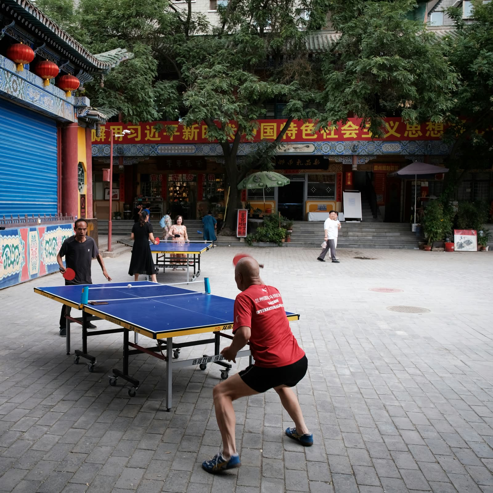
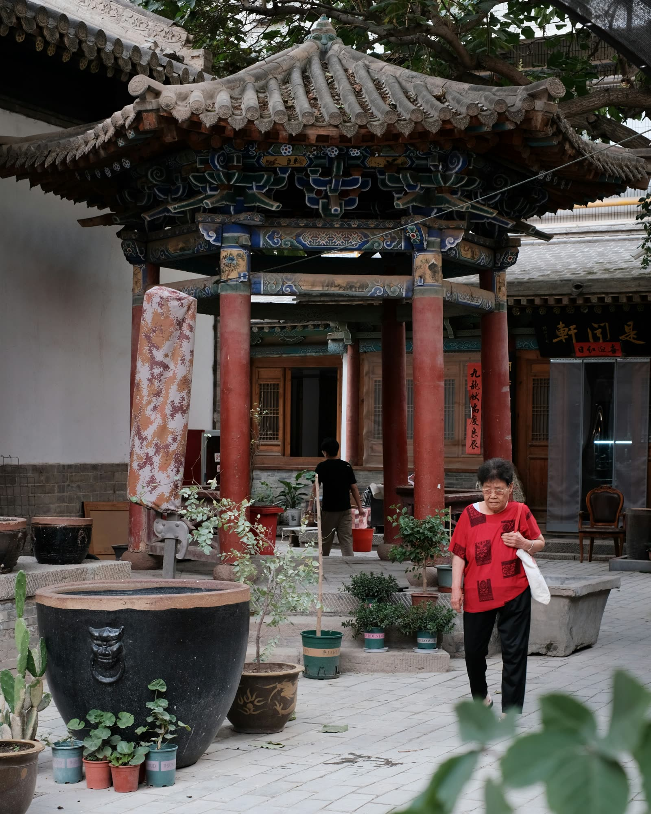
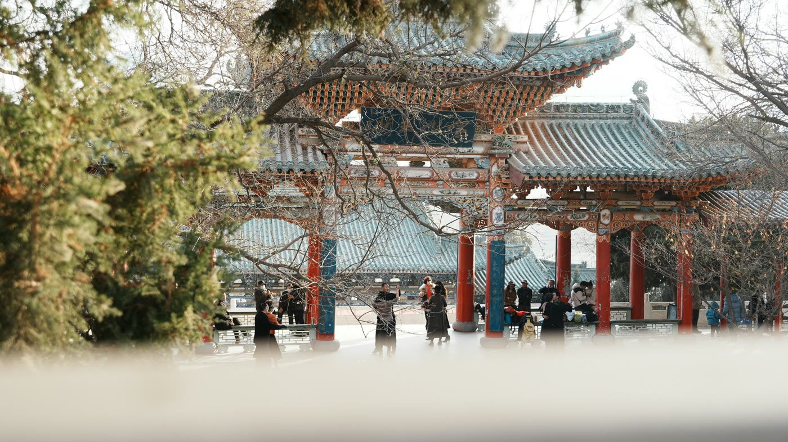
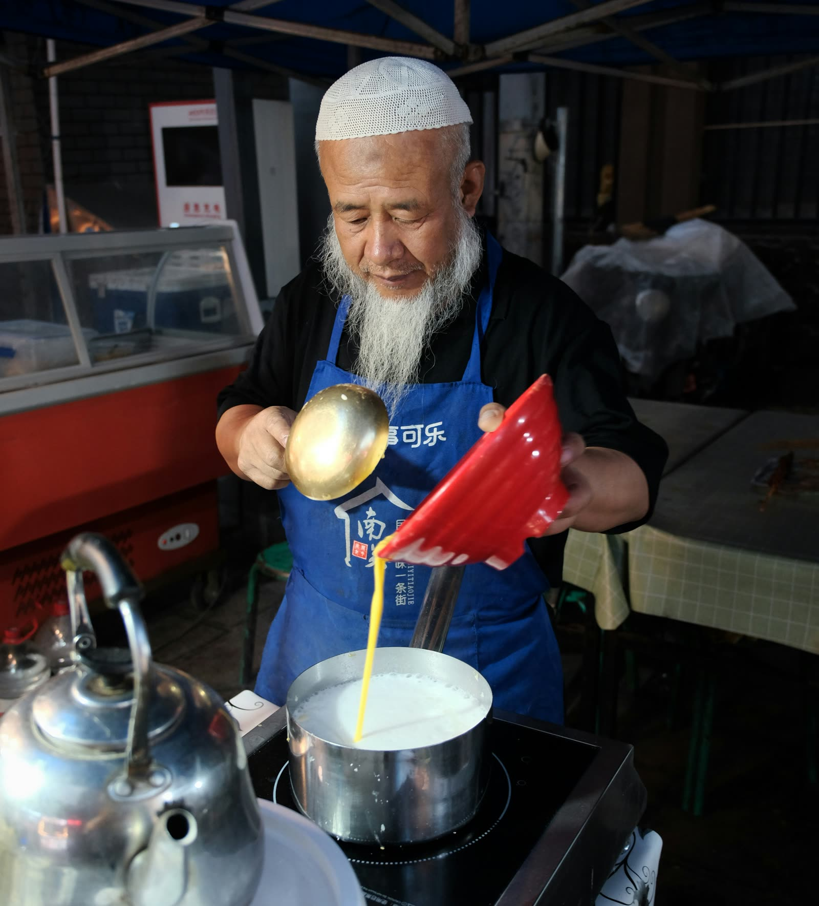

甘粛省の省都・蘭州(らんしゅう)は、シルクロードの要衝として栄えた黄河沿いの街です。人口は都市圏で400万人超。「蘭州牛肉麺の街」として日本でも名前だけは知られているかもしれませんが、実際には黄河が市街地の真ん中を貫く中国で唯一の省都という、地理的にも珍しい街です。この記事では、蘭州ならではの見どころと本場の牛肉麺の楽しみ方、そして日本との意外な縁を掘り下げます。
「金城」から「蘭州」へ:2000年以上前からの要衝
蘭州の歴史は、前漢の元狩2年(前121年)ごろに「金城県」が置かれたことにさかのぼります。「金城」という名の由来には、築城の際に金が出土したためという説と、「金城湯池(非常に堅固な城)」という故事にちなむという説の2つが伝わっています。その後、隋の開皇3年(583年)、隋の文帝が市街南方にそびえる皋蘭山(こうらんざん)にちなんで「蘭州」と改称し、以後この名が定着しました。「皋蘭」の語源自体には匈奴語・羌語など複数の説があり、はっきりとは分かっていません。唐代以降も北方民族との攻防が続く軍事的要衝であり、後述するように近代までシルクロード交易の中継地としての役割を担い続けてきた街です。
市内の見どころ
- 黄河が市街地を貫く、中国で唯一の省都:蘭州は、中国34の省級行政区の省都(直轄市を除く)の中で唯一、黄河本流が市街地の中心部を直接貫いて流れる街です。他の黄河沿いの主要都市は郊外を流れることが多く、川沿いを散策しながら街の中心部を楽しめるという点で、蘭州ならではの体験ができます
- 中山橋:1907年に着工、1909年に完成した、総延長5,000km超の黄河にかつて存在しなかった初めての恒久的な橋です。建設資材はすべてドイツから天津に運ばれ、そこから北京・鄭州・西安を経て蘭州まで陸送されたと伝わります。「黄河第一橋」の異名を持ち、1928年に孫文を記念して現在の「中山橋」に改称されました。現在は歩行者専用橋として整備されています
- 黄河母親像:彫刻家・何鄂(かがく)の作で1986年に完成した、母が子を抱く姿の花崗岩の彫刻です。全長6m・幅2.2m・高さ2.6m、重量40トン超。黄河を中華民族の母なる川に見立てた作品で、1987年に第一回全国都市彫刻コンクール優秀賞を受賞しています。黄河沿いの浜河路中段に立ち、蘭州観光の定番の記念撮影スポットです
- 白塔山公園:黄河北岸の山にある公園。中心となる白塔は元代の創建と伝わり、モンゴルへ向かう途中に蘭州で病没したチベット仏教の高僧を弔うために建てられたのが始まりとされています。元末に一度崩壊した後、明の景泰年間(1450〜1456年)に再建され、清代の1715年にも増築を経て現在の姿になりました。山頂からは市街地と黄河を一望できます
- 甘粛省博物館「銅奔馬(馬踏飛燕)」:1969年に武威市の雷台漢墓から出土した後漢時代(3世紀ごろ)の青銅器で、疾走する馬が飛燕を踏みつける瞬間をとらえた造形から「馬踏飛燕」の愛称で知られています。1971年に郭沫若がこの愛称を命名し、1983年に国家旅游局が中国観光のシンボルマークに正式採用しました。甘粛省博物館の中でも屈指の見どころです

周辺への拡張:黄河沿いに広がる歴史と絶景
- 興隆山(榆中県):蘭州市街から南東へ約60km、標高2,400mの陇右地方随一の名山とされる山です。1227年、モンゴル帝国のチンギス・ハンが西夏を攻めている最中にこの地で病没し、遺品が興隆山に安置されたと伝わります。1939年には日中戦争の混乱を避けるため、内モンゴルにあったチンギス・ハンの霊柩が一時的にここへ移されたこともあり、現在も成吉思汗文物陳列館が置かれています
- 黄河石林(白銀市景泰県):蘭州とは別の都市・白銀市に属しますが、蘭州から日帰り圏内(片道約2時間)にある景勝地です。黄河・石林・砂漠・オアシスが一度に楽しめる独特の景観で、ジャッキー・チェン主演映画「神話」など複数の映画・ドラマのロケ地としても使われてきました
- 敦煌:蘭州からさらに西へ、シルクロードを進んだ先にあるのが敦煌完全ガイドで紹介している莫高窟の街です。蘭州・敦煌はともにシルクロードの要衝として栄えた歴史を共有しており、あわせて旅程に組み込む旅行者も少なくありません(蘭州から高速鉄道で約6〜7時間)
甘粛省南部の甘南チベット族自治州にあるラブラン寺(夏河県、蘭州から車で約3時間)は、チベット仏教ゲルク派の六大寺院の一つに数えられる名刹です。甘南草原まで足を延ばす旅程を考えている場合の選択肢として、名前だけ触れておきます。
友好都市は秋田市:甘粛省にとって最初の国際友好都市
甘粛省は1982年8月5日、日本の秋田県と友好省県関係を締結しました。これは甘粛省にとって初めて結ばれた国際友好都市関係で、蘭州市内には「秋田会館」「秋田友誼亭」が、秋田県内には「甘粛友誼亭」がそれぞれ設けられ、40年以上にわたる交流の証となっています。


グルメ:本場の蘭州牛肉麺
蘭州牛肉麺は、清の嘉慶年間(1800年前後)、河南省懐慶府出身の陳維精という人物が、澄んだスープで作る牛肉麺の技法を蘭州出身の同窓生・馬六七に伝えたのが始まりという説が広く知られています。後を継いだ陳和声・馬保子らの手により、「一清二白三紅四緑五黄(スープは清く澄み、大根は白く、唐辛子油は紅く、パクチー・ニンニクの芽は緑、麺は黄色く輝く)」という具体的な5つの基準が確立され、今日まで受け継がれています。
注文の際に覚えておくと便利なのが、麺の太さを自分で選べるという点です。毛細(もうさい、極細)・二細・三細・韭葉(にらの葉のような平打ち)・大寛(太い平打ち)など何種類もの太さから選べ、辛さも「辣(辛い)」「微辣(少し辛い)」「不辣(辛くない)」を注文時に伝えられるのが一般的です。辛いものが苦手な方は「不辣」と伝えれば、唐辛子油を控えめにしてもらえます。
ここで正直にお伝えしておきたいのが、日本を含む中国各地で見かける「蘭州拉麺」の看板を掲げた店の多くが、実は蘭州出身者ではなく、青海省化隆回族自治県出身者によって経営されているという事情です。1988年に化隆出身者が厦門で「青海拉麺」の看板で開業したものの振るわず、すでに全国区の知名度があった「蘭州」の名に変えたところ繁盛したのがきっかけとされ、現在では全国の「蘭州拉麺」店の8割以上、店舗数にして3万店規模が化隆出身者によって営まれているといわれています。技法自体は蘭州から伝わったものですが、店主の出身地という意味では必ずしも「蘭州」と直結しないという、知っておくとちょっとした話のタネになる事情です。現地・蘭州で食べる牛肉麺は、こうした全国チェーン店とはまた違う、地元の朝食文化としての一杯を味わえる点が魅力です。

ちなみに、日本国内でも「蘭州ラーメン」の名を掲げる店に出会うことがありますが、こちらは中国各地の大衆チェーンとは少し事情が異なります。東京・神保町の「馬子禄 牛肉面」は、蘭州本店が100年以上の歴史を持つ老舗「馬子禄」の日本1号店として2017年8月にオープンした店で、9種類から選べる麺の太さや薬膳スープなど、本場さながらの造りを再現しています(1杯1,150円程度)。同じく東京・六本木には、中国全土に300店舗以上を展開する蘭州発の有名チェーン「金味徳」も出店しています。日本に定着した「蘭州ラーメン」は、化隆出身者による全国チェーンというよりも、こうした蘭州本場の名店をそのまま輸入したタイプが中心になっているのが実情です。
気候とベストシーズン
蘭州は内陸性の気候で、年間平均気温は9℃前後と比較的低く、乾燥していて昼夜の寒暖差が大きいのが特徴です。紫外線も強いため、季節を問わず日焼け対策は必須です。旅行のベストシーズンは5〜10月で、中でも空気が澄んで気候も安定する9〜10月が特におすすめです。朝晩は薄手の上着が必要になることもあるため、重ね着で調整できる服装計画にしておくと安心です。
東京からの行き方
本稿執筆時点(2026年9月)で、成田・羽田・関西空港から蘭州中川国際空港への直行便は確認できていません。もっとも現実的なルートは、成田・羽田から直行便のある西安まで飛び、そこから高速鉄道(徐蘭旅客専用線)で蘭州西駅まで約2時間28分というルートです。北京・上海経由で蘭州中川国際空港まで国内線を乗り継ぐ方法もあります。運航状況・時刻表は変更されることがあるため、渡航前に最新情報をご確認ください。
まとめ
蘭州は、黄河が市街地の真ん中を流れる中国で唯一の省都という地理的な個性と、2000年以上前から続くシルクロードの要衝としての歴史、そして日本でも名前が知られる本場の牛肉麺が味わえる街です。「敦煌など甘粛省のシルクロードをもう少し深く知りたい」「本場の蘭州牛肉麺を実際に食べてみたい」という方に、特におすすめできる街だといえるでしょう。
この記事の内容に古い情報や誤りを見つけた場合、あるいはご感想・ご質問がありましたら、お問い合わせまでお気軽にご連絡ください。